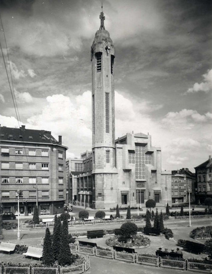
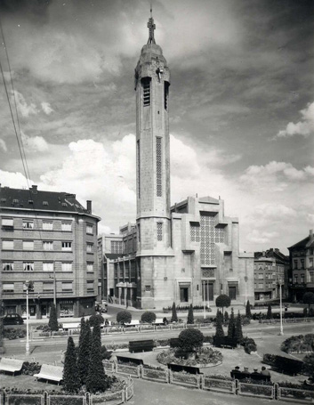
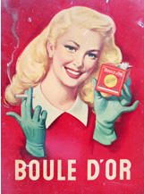
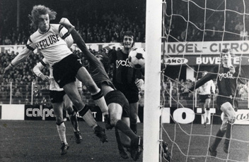
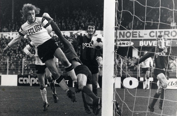
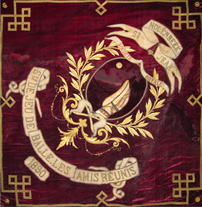
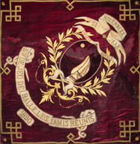
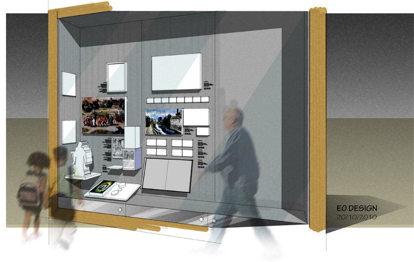
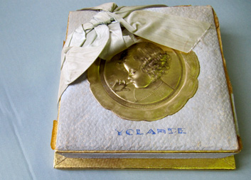
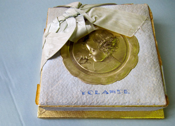

Openingsweekend
van MoMuse.
Gratis inkom !
Het Gemeentelijk Museum nodigt u uit om op zaterdag 16 en zondag 17 december 2017
Sint-Jans-Molenbeek vanuit een nieuwe en aantrekkelijke invalshoek te ontdekken.
Gratis inkom voor de permanente tentoonstelling
van 13u tot 18u.
Feestelijke en creatieve animatie van 14u tot 17u.
Gratis inkom ook op dinsdag 19, woensdag 20 en donderdag 21 december, van 12u tot 17u.
Bezoekersinformatie
Wie doet wat in MoMuse?
Arnaud Matagne
Directeur MoMuse en Dienst Tentoonstellingen - Dienst Culturen
Dr. Sven Steffens
Conservator MoMuse - Gemeentelijke archivist
Bernard Gauditiabois
Administratief, logistiek en technisch beheerder MoMuse
Het MoMuse zoekt en vormt zijn vrijwilligers om heel het jaar door publieke openingen te kunnen verzekeren.
Dank om uw kandidatuur per post naar het adres van MoMuse te sturen.
Contact en toegang
MoMuse - Gemeentelijk Museum van Sint-Jans-Molenbeek
Mommaertsstraat 2A
1080 Sint-Jans-Molenbeek
Tel. 02 - 412.08.12
Email : momuse@molenbeek.irisnet.be
Metro: Graaf van Vlaanderen, Zwarte Vijvers, (Lijnen 1 en 5), Ribaucourt (Lijn 6)
Parkeermogelijkheid in de Brunfautparking (Fernand Brunfautstraat)
Geleide bezoeken door de ploeg van het Museum op afspraak:
Tel. 02 - 412.08.12
Email : momuse@molenbeek.irisnet.be
Het MoMuse is toegankelijk voor personen met beperkte mobiliteit.
Openingsuren
2017
Zaterdag 16 en zondag 17 december 2017: 13u-18u – GRATIS INKOM
Dinsdag 19, woensdag 20 en donderdag 21 december 2017: 12u-17u – GRATIS INKOM
De week van 26 december 2017 gesloten
Heropening voor het publiek: woensdag 3 januari 2018
2018
Maandag, vrijdag en zaterdag: Gesloten
Dinsdag: van 12 tot 17 uur
Woensdag: van 12 tot 17 uur
Donderdag: van 12 tot 17 uur
Zondag: van 13 tot 18 uur
Jaarlijkse sluiting van 15 juli tot 2 september 2018 inbegrepen.
Tarieven
| Volledige prijs van de ingang tot de Permanente Tentoonstelling | 5 € |
| Senioren, Omnio, Molenbekenaren, mindervaliden, Fed+ | 3 € |
| Europese Jongerenkaart | 2 € |
| Art. 27 en werkzoekenden | 1,25 € |
| Jonger dan 18 jaar, studenten, leerkrachten, onderzoekers, ICOM (Internationale Commissie van musea) | gratis |
| Groepen (minimum 10): Niet-Molenbekenaren | 3 € per persoon |
| Groepen (minimum 10): Molenbekenaren | 2 € per persoon |
Brussels Card aanvaard
Betaling via Bancontact mogelijk
 

Het project van het Stedelijk Museum
Molenbeek herinnerd
Elke stad, elke gemeente wordt getekend door haar verleden. Het verhaal van Molenbeek, getekend door een groot industrieel verleden en opeenvolgende migratiegolven, is verre van banaal. In 2004 besloot het Molenbeekse gemeentebestuur, op initiatief van burgemeester Philippe Moureaux, om dit verhaal te vertellen. Dit was het begin van een museum waarin het gemeentelijk historisch en artistieke erfgoed, en de vele kleine en grote verhalen van haar inwoners, een plaats zullen krijgen.
In één van de vleugels van een prachtig geklasseerd gebouw uit 1879, ontworpen door architect Joachim Benoït, vond MoMuse een locatie die past bij har ambitie. Het museum deelt de site met de Académie de Dessin et des Arts Visuels, en met het Huis van Culturen en Sociale Samenhang. Vanaf de voorziene opening in 2012 zal MoMuse dus een onderdeel vormen van een actief cultureel centrum, in het historische hart van de gemeente.
MoMuse: een ontdekking!
MoMuse stelt in de eerste plaats het historisch erfgoed van de gemeente in de kijker, vanaf de vroegste sporen van menselijke aanwezigheid, tot vandaag, met bijzondere aandacht voor de voorbije twee eeuwen. Het kleine territorium van de gemeente (slechts 6 km2), onderging een diepgaande transformatie. Het landbouwdorp uit het Ancien Regime evolueerde, vooral vanaf 1840, snel tot een belangrijke industriële voorstad. De erop volgende bewegingen van neergang en desindustrialisatie, en een nieuwe demografische remonte vanaf de jaren 1960 waren niet minder ingrijpend. Gebeurtenissen die het karakter van de gemeente wezenlijk bepaald hebben.
MoMuse wil ook een motor zijn van sociale samenhang; een plek waar je je leefomgeving leert kennen en begrijpen. Zowel de huidige als de toekomstige inwoners van de gemeente moeten zich er thuis kunnen voelen. Sint-Jans-Molenbeek is immers altijd een kruispunt geweest. Mensen met verschillende achtergronden en van diverse afkomst hebben van de gemeente hun thuis gemaakt. Ze namen deel aan haar gemeenschapsleven en droegen bij tot haar rijkdom.
Ten slotte wil MoMuse een museum zijn waar de deuren voor iedereen openstaan. Een plek die iedereen, ongeacht afkomst, cultuur, geloof of overtuiging moet kunnen ontdekken. Het museum wil bijdragen aan een actief gemeenschapsleven. MoMuse neemt de inwoners van Molenbeek en bezoekers mee op een reis doorheen de geschiedenis, om hen op het einde van de rit te laten vertrekken met een nieuwe blik op Molenbeek.
De Museumopstelling
De permanente tentoonstelling, opgedeeld in 6 thematische ruimtes, ziet er als volgt uit:





 
 

Sint-Jans-Molenbeek: een heilige, een beek en een molen.
Molenbeek in kaart gebracht
Hier ontdek je welke invloed de geografische ligging had op de ontwikkeling van de gemeente.
Hoewel je er vandaag niet zoveel meer van merkt, is water altijd belangrijk geweest voor Molenbeek. De vele beken, waterlopen, vijvers, en natuurlijk het kanaal van Charleroi, waren belangrijk voor het uitzicht en de economische ontwikkeling van de gemeente. In die mate zelfs dat de naam van waterlopen nog altijd doorleeft in de naam van de gemeente en in namen van haar straten en pleinen.
Je leert hier ook over de relatie tussen Molenbeek en haar grote buur, Brussel Stad. Oude charters en plannen illustreren de afhankelijkheid van Molenbeek van Brussel tot 1795. We vertellen het verhaal van de vier stadspoorten (Ninoofse poort, Vlaamse poort, Oeverpoort en de Lakense poort) die de grens tussen Molenbeek en Brussel bepaalden. Kaarten, luchtfoto’s en een 3D maquette tonen hoe Sint-Jans-Molenbeek zich ontwikkelde van een landbouwdorp tot de stadsgemeente die ze nu is.
Wie is mijn buur? Diversiteit & een bevolking in beweging.
Mensen – Demografie – Migratiegolven – Overgangsrituelen en tradities
Een gemeente wordt gevormd door de mensen die er dagelijks leven en werken; door nieuwkomers en oude families; door kortstondige voorbijgangers en gelukzoekers... Maar wie zijn ze? Waar komen ze vandaan? Waarom kiezen en kozen ze voor Molenbeek?
Hier maak je kennis met enkele families en personages. Aan de hand van hun verhalen leer je over de verschillende migratiegolven, en de diverse sociale, geografische en culturele achtergrond van de mensen die Molenbeek maken en maakten. Je ziet er hoe de ontwikkeling van rurale naar industriële maatschappij een impact had op de bevolkingsgroei en verstedelijking.
De inwoners uit verschillende culturen brachten natuurlijk eigen tradities mee. Aan de hand van documenten en objecten illustreren we de rituelen die de belangrijke levensfasen binnen deze culturen vorm geven: de geboorte, het volwassen worden, het huwelijk, en tenslotte, de dood.
Deze ruimte wordt omzoomd door portretten van mensen die al deze veranderingen weerspiegelen.
Thuis in Molenbeek. Over straten, pleinen & woningen.
Stedenbouwkundige evolutie en ontwikkeling van huisvesting
Duik meer dan 100 jaar terug in de tijd. Vergeet de metro, hoge flatgebouwen, modern huishoudelijk comfort zoals een toilet met water, wasmachines of televisies. Welkom in de 19e eeuw!
Eind 19e eeuw kent Molenbeek een snelle industriële expansie. De gemeente wordt Klein Manchester genoemd. Vele arbeiders vestigden zich in de gemeente. Zij werden aangetrokken door de werkgelegenheid in de fabrieken die als paddenstoelen uit de grond schoten. Dit leidde tot een sterke urbanisatie en tot uitbuiting van de arbeidersklasse. In deze museumruimte verneem je meer over de vaak schrijnende levensomstandigheden van de arbeiders. Hierin komt jammer genoeg pas verandering tijdens de eerste helft van de 20e eeuw. Deze ruimte toont tevens de scherpe tegenstellingen die er waren tussen de woonomgeving van de arbeiders en die van de rijke burgerij, en de 20e eeuwse ontwikkeling van het huishoudelijk comfort.
Ook stedenbouwkundig verandert de gemeente ingrijpend. Er zijn de vele tientallen industriële sites, de ontwikkeling van Tour & Taxis, het kanaal van Charleroi, de aanleg van de Leopold II-laan, enz. Andere projecten, zoals de aanleg van de Metro en het viaduct op de Leopold II-laan lieten jarenlang littekens achter in het stedelijk landschap.
Hard labeur. Werken in Molenbeek.
Economische ontwikkeling, kleine ambachten en grote ondernemingen.
Aan het werk! We beginnen met enkele ambachten die vandaag nagenoeg verdwenen zijn uit Molenbeek, zoals de handschoenmaker, mutsenmaker, tuinbouwer, groenteteler, sigarettenmakers, enz. Niet alleen deze kleine ambachten, maar ook de aanwezigheid van grote ondernemingen, illustreren het industriële karakter van de gemeente. Ook de impact van de technologische ontwikkeling op de economie en ons dagelijks leven wordt in de kijker gezet.
Wie economie zegt, zegt ook logistiek en transport. Het spoorvervoer, tramwegen en waterlopen hebben een belangrijke bijdrage geleverd aan de economische ontwikkeling van de gemeente gedurende de laatste twee eeuwen. Deze ontwikkeling is er een van grote ups and downs, en gaat ook vandaag nog verder.
Maquettes, machines, affiches, kaarten en plannen illustreren dit cyclische verhaal.
Een bank vooruit. Onderwijs in Molenbeek.
Van kinderarbeid tot volwassenenonderwijs
Lange tijd was onderwijs vooral een middel van enkelen om te klimmen op de sociale ladder. Vandaag heeft iedereen recht op onderwijs. Naast het verstrekken van onderwijs spelen scholen nog een tweede belangrijke rol: ze stimuleren sociale samenhang binnen een complexe maatschappij.
Sociale uitbuiting van arbeiders was wijdverspreid in de 19e eeuw. Ook kinderarbeid was schering en inslag in onze gemeente tot bij de aanvang van de 20e eeuw. Pas na de invoering van de leerplicht in 1914 kwam hieraan een einde. Naast wetgeving tonen we ook de andere evoluties die het onderwijs doormaakte. Hoe veranderden de pedagogische opvattingen? Wie waren de leerlingen? Welke vakken werden onderwezen en hoe gebeurde dit? Over welke middelen beschikten leerkrachten? Ging men op schoolreis?
Deze ruimte biedt dus antwoorden op heel wat vragen. ‘Oudere’ bezoekers zullen er worden herinnerd aan hun kindertijd terwijl ‘jongere’ bezoekers worden uitgenodigd om de vergelijking met vandaag te maken.
Plezier en vertier in Molenbeek!
Samenleven in Molenbeek: het verenigingsleven, ontspanning, cultureel en artistiek erfgoed
Het Molenbeekse verenigingsleven kent een lange geschiedenis. Talrijke literaire, muzikale, sportieve en politieke kringen waren belangrijke ontmoetingsplaatsen, al sinds de tweede helft van de negentiende eeuw. Mensen verenigen zich niet alleen omwille van een gemeenschappelijke interesse of hobby, maar ook omdat ze behoren tot dezelfde levensbeschouwelijke stroming, of omdat ze werken in hetzelfde bedrijf, dezelfde taal spreken of in elkaars buurt wonen. Heel wat verenigingen dragen trots een eigen vlag of vaandel. Het museum stelt enkele prachtige exemplaren tentoon.
Gelukkig stond niet enkel het verenigingsleven in voor ontspanning in Sint-Jans-Molenbeek. Theaters, cinema’s en balzalen zorgden lange tijd voor het nachtelijke vertier. Grote sportcentra, zoals dat van Daring, hadden een rijk aanbod aan activiteiten: de zwembaden, tennis- en voetbalvelden en zonneweiden trokken honderden bezoekers. Wielerfanaten gingen uit hun dak tijdens de wedstrijden in de Velodroom van Karreveld. Er was met andere woorden voor ieder wat wils, al hing de mogelijkheid tot ontspanning natuurlijk ook samen met de middelen waarover iemand beschikte.
De ruimte die is gewijd aan ‘Vrije Tijd’ bestaat uit vier delen. Het eerste deel bespreekt de sporten die worden en werden beoefend in de gemeente. Vervolgens komt de brede waaier aan culturele activiteit aan bod: film, toneel, dans en de vroeger erg populaire fanfares en harmonieën. Het derde onderdeel besteedt aandacht aan grote bijeenkomsten en optochten: processies, herdenkingsplechtigheden, traditionele feesten enz. Tenslotte herontdekken we aan de hand van foto’s en biografische gegevens de Molenbekenaren die ooit een belangrijke rol speelden, of dat nog steeds doen, binnen en buiten de gemeente.


Het Museum achter de schermen.
De collectie: bewaren als een van de kerntaken van het museum.
De collectie van het museum groeit elke dag. Ze bestaat uit objecten, iconografie en archieven. De collectie kwam tot stand door particuliere schenkingen, nalatenschappen, aankopen en bruiklenen. Elk stuk heeft op een of andere manier een verband met Molenbeek. De collectie is op dit ogenblik een 1000-tal objecten rijk. Daarnaast zijn er ook de omvangrijke fondsen postkaarten (ongeveer 2000 stuks) en foto’s (meer dan 2000 stuks).
Elke dag werken de medewerkers van het museum aan de inventarisatie van een steeds groeiende collectie. Alle stukken worden bewaard volgens specifieke methodes: oud textiel dient anders te worden geconserveerd dan een foto. We zorgen ervoor dat elk object dat binnenkomt wordt opgenomen in de inventaris en op een zorgvuldige manier wordt behandeld. Het object wordt geanalyseerd, schoongemaakt, gefotografeerd of gescand, en verpakt in geschikte materialen.
Hoewel collectiebeheer meestal verborgen is voor het publiek, is het toch een belangrijk deel van de werking van het museum!
Documentatiecentrum:
Het museum beschikt over een uitgebreide bibliotheek met ongeveer 1500 titels. In deze bib vind je voornamelijk boeken, artikels, tijdschriften en kranten (ook oude), catalogi, schoolboeken en de volledige collectie van Molenbeek Info.
De bibliotheek is volledig geïnventariseerd.
De museumcollectie en gemeentearchieven ten dienste van vorsers, journalisten en particulieren
Informatieverstrekking is een belangrijke taak van het Museum. Onderzoekers en particulieren kunnen bij het museum terecht met al hun vragen, gaande van de oorsprong van een straatnaam tot meer algemene vragen over de geschiedenis van de gemeente. Ook wie gespecialiseerd onderzoek voert, kan bij ons terecht. De museumploeg, onder leiding van de Conservator tevens Gemeentearchivaris, helpt je graag verder met al uw vragen en opzoekingen.
Indien je de collecties van MoMuse wenst te raadplegen, gelieve dan eerst contact op te nemen met het museum.

 


Het museum heeft je nodig: doe een schenking of een bruikleen aan het museum
Het museum verzamelt niet alleen oude of waardevolle dingen
Geen museum zonder collectie. Geen MoMuse zonder de inwoners van Molenbeek! Natuurlijk vinden we in de gemeentearchieven heel wat informatie over het leven in Molenbeek. Maar het museum leeft pas echt wanneer we ons verhaal kunnen vertellen a.d.h.v. foto’s, souvenirs, persoonlijke voorwerpen, anekdotes, enz.
Woon je in Molenbeek? Heb je er zelf gewoond of heeft je familie er gewoond? Misschien heb je op zolder nog wat oude spullen, foto’s of documenten die herinneren aan het familiale, professionele of verenigingsleven? Zin om de geschiedenis van deze voorwerpen te delen met het Museum? Neem dan contact op met ons, en toon ons je eigen erfgoed.
Waarom iets lenen of schenken aan het museum?
Een historisch museum is al lang geen stoffige bedoening meer. Het museum leeft en is constant in beweging. MoMuse is een jong museum. Sedert het project 5 jaar geleden werd gestart, zijn de collecties langzaam gegroeid.
Wat je in de museumopstelling ziet, is grotendeels verworven door aankopen, bruiklenen van andere musea en schenkingen en bruiklenen van particulieren, zoals jij. Zo proberen we de inwoners van Molenbeek, o.m. via het gemeentelijk informatieblad, bewust te maken van het museum.
Een schenking of een bruikleen?
Twijfel je tussen een bruikleen of een schenking? Dit zijn de verschillen:
-
Een schenking : de eigenaar van het stuk doet er afstand
van en MoMuse wordt eigenaar. Het museum heeft de verplichting om het voorwerp te inventariseren en op een correcte
manier te bewaren.
- Een bruikleen : de eigenaar van het voorwerp blijft eigenaar. Het kan gaan om een bruikleen van lange of korte duur. Er wordt steeds een overeenkomst opgesteld tussen de bruikleengever en de gemeentelijke overheid. Wanneer een particulier enkele foto’s of documenten aan het museum leent, dan scannen we deze en nemen ze op in de collectie. Het museum vraagt tevens toestemming om deze reproducties op te nemen in de permanente tentoonstelling.
Enkele voorbeelden van welke voorwerpen ons momenteel interesseren:
-
persoonlijke foto’s
-
documenten (oude briefwisseling, trouwboekjes, overlijdensberichten, ...)
-
schoolse documenten (schoolboeken, rapporten, klasfoto’s, schooltijdschriften,...)
-
kledij en textiel (uniformen, doopkleding, communiekleding, trouwkleding, rouwkleding,...)
-
documenten en voorwerpen van verenigingen die bestaan of hebben bestaan in Molenbeek, zoals
sportclubs, bedrijfsverenigingen, theatergezelschappen, harmonie en fanfare, ...
(vaandels en vlaggen, foto’s, tijdschriften, ledenlijsten,...)
-
En natuurlijk elk ander voorwerp of document dat ons volgens u kan interesseren!
Wil je een object schenken of in bruikleen geven aan MoMuse?
Neem contact op met:
MoMuse
Sven Steffens, Conservator
Mommaertsstraat 2A
B-1080 Sint-Jans-Molenbeek
Tel : 02 - 412.08.10
Fax : 02 - 412.08.19
Of stuur een mail naar momuse@molenbeek.irisnet.be en omschrijf je object zo duidelijk mogelijk.
Het museum gaat na of het object past binnen het collectiebeleid alvorens een gift op te nemen in de collectie.